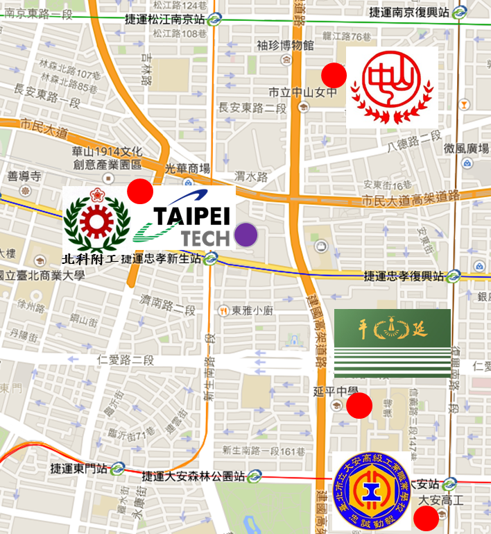
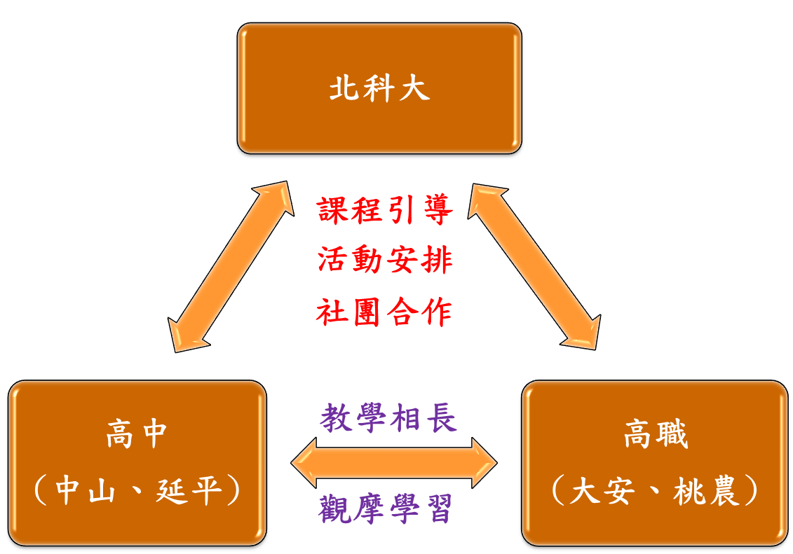
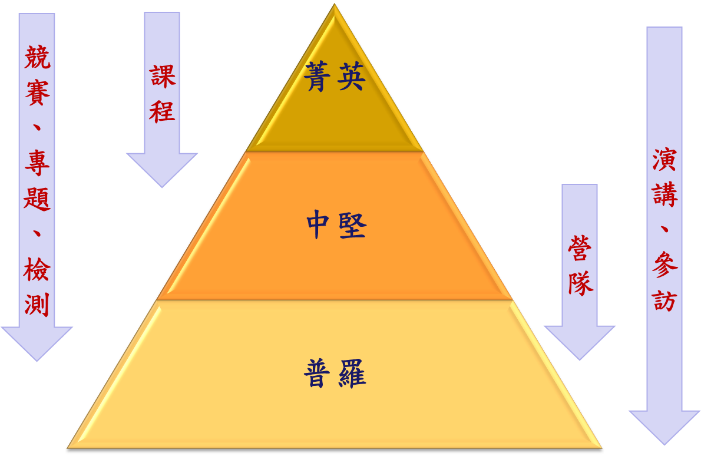
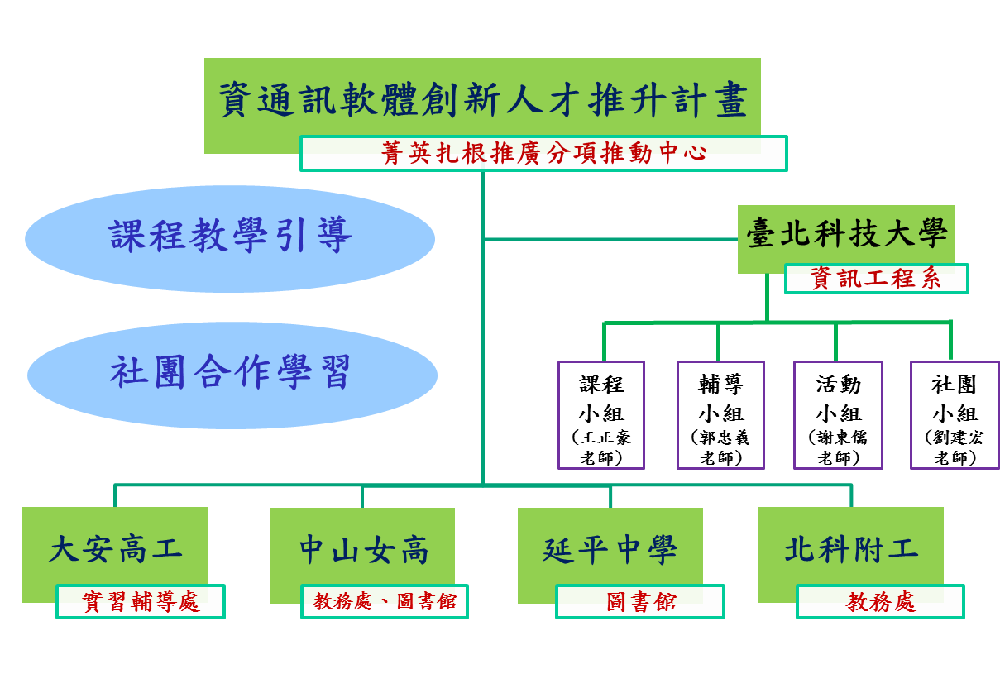

近年來行動網路與電腦軟硬體的快速發展，驅使了雲端運算的實現，在相關的服務應用不斷地興起之下，帶動了巨量資料分析技術及雲端加值應用的研發與進步，也促進了資訊科技與更多其他領域或產業相互結合，再加上智慧行動裝置的創新與普遍，造就了物聯網及其相關產業時代的來臨。根據經濟部工業局在2016公布的「2016~2018年重點產業人才需求調查」 報告，資訊科技相關產業的人才需求逐年增加，特別是在大智移雲 ( 大數據、智慧裝置、行動應用、雲端運算 ) 的新市場契機下，人才需求維持高檔，每年新增需求至少約為 1,000 人。而在今年「2017~2019年重點產業人才需求調查」中進一步指出，我國產業未來將因物聯網、智慧運算、工業4.0、高值化等重點趨勢方向，帶動電子資訊、設計服務相關產業，投入消費性終端產品、零組件和應用服務之創新研發，包括IC 設計、面板、通訊設備、雲端巨量、設計服務等各項產業，業者對於前瞻科技研發與應用類型人才需求持續暢旺。這些調查亦說明了資訊科技在現在與未來社會所扮演的角色愈來愈重要，相關的應用在日常生活中也越來越普及。
由以上趨勢來看，除了資訊相關專業人才需要不斷培育之外，資訊知識的普及益趨重要。但目前資訊相關專業人才的培育主要是在大學以上階段。學生在大學之前因礙於升學考試制度，能接觸到關於資訊方面的機會與知識有限，若能將資訊教育及早推廣至大學階段之前，除了對資訊專業人才培育能有所幫助，更能讓一般學生或民眾對資訊科學有較清楚的認識與理解，易於接受與習慣未來的科技化社會。這也與教育部預計在107年8月上路的12年國教課綱中，國、高中將新增「資訊科技」一科，培養學生「運算思維與問題解決」、「資訊科技與合作共創」、「資訊科技與溝通表達」及「資訊科技的使用態度」等能力的作法相呼應。
基於大學對於社會之責任，國立臺北科技大學資訊工程系有幸參與教育部「扎根高中職資訊科學教育計畫」之推動，規劃辦理資訊科學教育推廣活動於高中職學校，其目標在於：
- 普及高中職資訊科學教育
- 培養高中職學生運算思維能力
- 增加高中職學生資訊科技應用能力
- 發掘具有資訊科學潛力的高中職學生
過去兩年中，北科大資工系所執行的內容與成果符合當初計畫規劃與預期，在未來的一年亦將依規畫之橫向與縱向兩個面向持續努力推動相關活動，並按執行經驗適度調整活動內容與實施方式來推廣資訊科學，落實扎根高中職資訊科學教育以達到上述目標。計畫規劃的橫面向是以資訊科學的普及為導向，對象可為所有高中生、老師，甚至一般民眾，將以資訊科技概述或發展趨勢等議題為主軸，辦理屬於資訊的科普活動，如演講、企業參訪、營隊活動等，使學生甚至於一般民眾易於瞭解與接觸資訊科學。縱向則是以資訊專業的深化為目的，亦即資訊專業深度的拓展，主要是針對對資訊已有些專業訓練或有相當程度興趣的學生進行較具深度的訓練與培育，為高中職生開設基礎程式設計課程將是一大重點，並加上專案開發的實務專題體驗，加深學生程式撰寫以及程式設計整合開發的能力，提早培育資訊科學人才，符合目前普及學生程式設計能力的國家政策與趨勢潮流。
計畫所合作的高中職包括了鄰近學校(北科大)的臺北市立大安高級工業職業學校(大安高工)、臺北市立中山女子高級中學(中山女高)與私立延平高級中學(延平中學)，以及國立臺北科技大學附屬桃園農工高級中等學校(北科附工)，合作學校包含了公私立、職業與普通高中、及女校等特性。鄰近學校的高中職與北科大的距離最遠僅隔兩個捷運站(請參閱圖一)，皆可步行或搭乘捷運到達，彼此往返討論與教學施作皆相當方便。改隸合併後的北科附工，延續之前與北科大的策略聯盟合作，在學校資源能彼此共享的條件下，十分適合進行高中職資訊科學教育的推廣與扎根活動。

計畫所規劃的進行方式包含了課程教學引導與社群合作學習。在教學引導方面，北科大依據各合作高中職對於計畫的期望與需求，規劃相關課程與活動，合作高中職則協同執行並給予回饋，教學相關的活動因為是針對所有合作高中職，因此皆在北科大進行，教材內容則需合作高中職的相關老師共同參與，以符合高中職生的學習背景。其他如演講與參訪等活動，則是各合作高中職依其需求，自行訂定主題，由北科大負責在各合作高中職辦理。在社群合作學習方面，計畫將引導學生彼此自發性的合作學習，北科大的各專業研究實驗室或是資訊相關社群將協助合作高中職生在資訊領域的體驗，以學長帶領學弟的方式進行學習與社群交流，請參閱圖二。此外，各合作高中職也可藉此計畫相互交流與觀摩彼此的資訊教學情形，高職生的實作經驗較為豐富，可適時分享給高中生；高中生則可以協助高職生在學科測驗的準備，讓合作高中職的學生得以教學相長，互得其利。

整體計畫所安排的內容如圖所示，主要是推廣資訊科學教育的活動，包含了開授程式設計課程、舉辦暑期資訊科學營隊、辦理相關演講與企業參訪、安排學生實際參與專題製作、以及輔導學生參加資訊競賽與資訊能力檢測，每樣活動所考慮的對象因性質不同而有所不同。在此計畫中，對資訊科學有所專精之學生我們歸類為「菁英」；對資訊科學有興趣但尚未有專業之訓練之學生，我們稱為「中堅」；其他的學生則為「普羅」。在課程方面，主要是針對菁英或部分對資訊科學極有興趣之學生實施；資訊科學營隊的舉辦則是要讓學生對資訊科學有進一步的認識與學習，增加學生的興趣，主要對象放在中堅學生或部分普羅學生；輔導學生參加資訊競賽與資訊能力檢測，因為牽涉層面較廣，對於菁英或中堅的學生，計畫將輔導其參加競賽與專題之開發，而普羅學生亦可藉由輔導增加資訊學科程度，提高運算思維能力；演講與企業參訪則是可以對所有學生來辦理，甚至於老師亦可加入活動，主要是以普及資訊科學應用為主。


為使規劃的相關活動得以順利推展，北科大與合作高中職將密切合作，整體組織架構如圖四，北科大接受教育部「資通訊軟體創新人才推升計畫」之菁英扎根推廣分項推動中心指導，規劃並推動菁英扎根相關活動，合作高中職將配合實施並給予回饋，提升資訊科學教育推廣效果。同時，北科大亦將扮演協調角色，讓合作高中職能彼此充分交流與觀摩資訊教學情形。北科大部分除了計畫主持人與共同主持人負責整體規劃、協調、與執行之外，將設置四個小組分別負責計畫預定推廣的事項：
- 課程小組：
由共同主持人王正豪教授負責統籌規畫開設資訊科學相關課程事宜，包含了課程主題及內容訂定、課程教材的製作整理、課程的實施方式、以及授課進度協調等。
- 輔導小組：
主要任務在於輔導學生參加資訊科學測驗與競賽，以及協助學生解決在課程學習當中所遇到的問題，並將參與課程教材製作，適時將競賽或測驗演練題目或主題融入課程之中，此部分委請國立臺北科技大學資訊工程系郭忠義教授負責。
- 活動小組：
計畫所規劃的演講、參訪、以及營隊等活動，主要目的在於推動學生認識資訊產業與資訊科技發展，活動小組即是針對此一推廣事項進行進一步規劃，包含了主題選定、參訪廠商推薦、活動進行方式與流程等，將委請國立臺北科技大學資訊工程系謝東儒教授統籌辦理。
- 社群小組：
本計畫所規劃的推廣方式，除了上述的課程、輔導與活動外，另一個重點是以社群的方式進行推動，北科大的教授專業實驗室或是資訊相關社群可協助合作高中職生對於資訊相關專業領域的認識與學習。學生的年齡差距小，相互學習較無壓力，較易增加學習效果與興趣，亦可深化資訊科學教育。這部分將委由對資訊相關社群發展相當關心的國立臺北科技大學資訊工程系劉建宏教授協助。